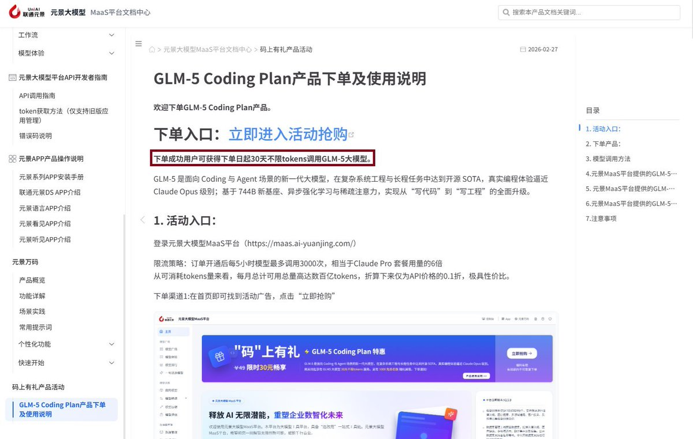
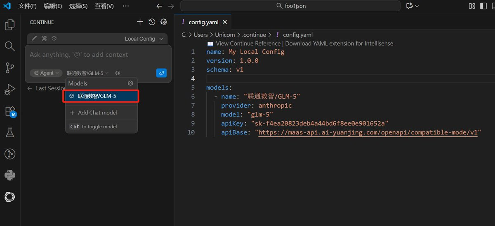

奶昔🥤
@realNyarime
@9_bishi


奶昔🥤
@realNyarime
联通元景MaaS平台GLM-5套餐实测是超大杯！GLM-5 Coding Plan产品下单成功用户可获得下单日起30天不限tokens调用GLM-5大模型，质量感觉比最近官方的降智减速PRO好不少！
实测最大速度约为30token/s，最慢速度大1.9token/s。可能是优化或者是并发问题，速度比老黄快多了，不是很稳定就是了。 https://t.co/YLi7fx7Rra
みかん（つぶやきver.）
@9_bishi
@realNyarime 联通部署的速度如何呢，想买一个月试试